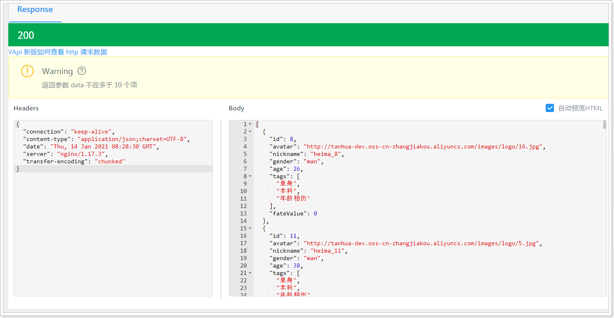

day08
课程说明¶
- 上报地位位置
- 实现搜附近功能
- 实现探花功能
- 用户基本信息维护
1、上报地理位置¶
当客户端检测用户的地理位置，当变化大于500米时或每隔5分钟，向服务端上报地理位置。
用户的地理位置存储到Elasticsearch中，需要使用环境提供的ES集群，如下：

1.1、dubbo服务¶
用户地理位置的服务独立一个新的工程来实现，名字为：my-tanhua-dubbo-es。
1.1.1、创建工程¶
pom.ml文件如下：
<?xml version="1.0" encoding="UTF-8"?>
<project xmlns="http://maven.apache.org/POM/4.0.0"
xmlns:xsi="http://www.w3.org/2001/XMLSchema-instance"
xsi:schemaLocation="http://maven.apache.org/POM/4.0.0 http://maven.apache.org/xsd/maven-4.0.0.xsd">
<parent>
<artifactId>my-tanhua-dubbo</artifactId>
<groupId>cn.itcast.tanhua</groupId>
<version>1.0-SNAPSHOT</version>
</parent>
<modelVersion>4.0.0</modelVersion>
<artifactId>my-tanhua-dubbo-es</artifactId>
<dependencies>
<!--引入interface依赖-->
<dependency>
<groupId>cn.itcast.tanhua</groupId>
<artifactId>my-tanhua-dubbo-interface</artifactId>
<version>1.0-SNAPSHOT</version>
</dependency>
<dependency>
<groupId>org.springframework.boot</groupId>
<artifactId>spring-boot-starter</artifactId>
</dependency>
<dependency>
<groupId>org.springframework.boot</groupId>
<artifactId>spring-boot-starter-test</artifactId>
<scope>test</scope>
</dependency>
<dependency>
<groupId>org.springframework.boot</groupId>
<artifactId>spring-boot-starter-data-elasticsearch</artifactId>
</dependency>
<!--dubbo的springboot支持-->
<dependency>
<groupId>com.alibaba.boot</groupId>
<artifactId>dubbo-spring-boot-starter</artifactId>
</dependency>
<!--dubbo框架-->
<dependency>
<groupId>com.alibaba</groupId>
<artifactId>dubbo</artifactId>
</dependency>
<!--zk依赖-->
<dependency>
<groupId>org.apache.zookeeper</groupId>
<artifactId>zookeeper</artifactId>
</dependency>
<dependency>
<groupId>com.github.sgroschupf</groupId>
<artifactId>zkclient</artifactId>
</dependency>
<dependency>
<groupId>io.netty</groupId>
<artifactId>netty-all</artifactId>
</dependency>
<dependency>
<groupId>cn.hutool</groupId>
<artifactId>hutool-all</artifactId>
</dependency>
</dependencies>
</project>
application.properties文件：
# Spring boot application
spring.application.name = itcast-tanhua-dubbo-es
# dubbo 扫描包配置
dubbo.scan.basePackages = com.tanhua.dubbo.es
dubbo.application.name = dubbo-provider-es
#dubbo 对外暴露的端口信息
dubbo.protocol.name = dubbo
dubbo.protocol.port = 20882
#dubbo注册中心的配置
dubbo.registry.address = zookeeper://192.168.31.81:2181
dubbo.registry.client = zkclient
dubbo.registry.timeout = 60000
#ES集群配置
spring.data.elasticsearch.cluster-name=es-tanhua-cluster
spring.data.elasticsearch.cluster-nodes=192.168.31.81:9300,192.168.31.81:9301,192.168.31.81:9302
启动类：
package com.tanhua.dubbo.es;
import org.springframework.boot.SpringApplication;
import org.springframework.boot.autoconfigure.SpringBootApplication;
import org.springframework.boot.autoconfigure.data.mongo.MongoDataAutoConfiguration;
import org.springframework.boot.autoconfigure.mongo.MongoAutoConfiguration;
@SpringBootApplication(exclude = {MongoAutoConfiguration.class, MongoDataAutoConfiguration.class}) //排除mongo的自动配置
public class ESApplication {
public static void main(String[] args) {
SpringApplication.run(ESApplication.class, args);
}
}
1.1.2、定义pojo¶
在my-tanhua-dubbo-interface中创建：
package com.tanhua.dubbo.server.pojo;
import lombok.AllArgsConstructor;
import lombok.Data;
import lombok.NoArgsConstructor;
import org.elasticsearch.common.geo.GeoPoint;
import org.springframework.data.annotation.Id;
import org.springframework.data.elasticsearch.annotations.Document;
import org.springframework.data.elasticsearch.annotations.Field;
import org.springframework.data.elasticsearch.annotations.FieldType;
import org.springframework.data.elasticsearch.annotations.GeoPointField;
@Data
@NoArgsConstructor
@AllArgsConstructor
@Document(indexName = "tanhua", type = "user_location", shards = 6, replicas = 2)
public class UserLocation {
@Id
private Long userId; //用户id
@GeoPointField
private GeoPoint location; //lon:经度 lat:纬度
@Field(type = FieldType.Keyword)
private String address; //位置描述
@Field(type = FieldType.Long)
private Long created; //创建时间
@Field(type = FieldType.Long)
private Long updated; //更新时间
@Field(type = FieldType.Long)
private Long lastUpdated; //上次更新时间
}
package com.tanhua.dubbo.server.vo;
import cn.hutool.core.bean.BeanUtil;
import com.tanhua.dubbo.server.pojo.UserLocation;
import lombok.AllArgsConstructor;
import lombok.Data;
import lombok.NoArgsConstructor;
import java.util.ArrayList;
import java.util.List;
@Data
@NoArgsConstructor
@AllArgsConstructor
public class UserLocationVo implements java.io.Serializable {
private static final long serialVersionUID = 4133419501260037769L;
private Long userId; //用户id
private Double longitude; //经度
private Double latitude; //维度
private String address; //位置描述
private Long created; //创建时间
private Long updated; //更新时间
private Long lastUpdated; //上次更新时间
public static final UserLocationVo format(UserLocation userLocation) {
UserLocationVo userLocationVo = BeanUtil.toBean(userLocation, UserLocationVo.class);
userLocationVo.setLongitude(userLocation.getLocation().getLon());
userLocationVo.setLatitude(userLocation.getLocation().getLat());
return userLocationVo;
}
public static final List<UserLocationVo> formatToList(List<UserLocation> userLocations) {
List<UserLocationVo> list = new ArrayList<>();
for (UserLocation userLocation : userLocations) {
list.add(format(userLocation));
}
return list;
}
}
由于UserLocation不能序列化，所以要再定义UserLocationVo进行返回数据。
在my-tanhua-dubbo-interface中添加依赖：
<dependency>
<groupId>org.springframework.boot</groupId>
<artifactId>spring-boot-starter-data-elasticsearch</artifactId>
</dependency>
<dependency>
<groupId>cn.hutool</groupId>
<artifactId>hutool-all</artifactId>
</dependency>
1.1.3、定义dubbo接口¶
在my-tanhua-dubbo-interface工程中。
package com.tanhua.dubbo.server.api;
public interface UserLocationApi {
/**
* 更新用户地理位置
*
* @param userId 用户id
* @param longitude 经度
* @param latitude 纬度
* @param address 地址名称
* @return
*/
Boolean updateUserLocation(Long userId, Double longitude, Double latitude, String address);
}
1.1.4、编写实现¶
package com.tanhua.dubbo.es.api;
import cn.hutool.core.util.ObjectUtil;
import com.alibaba.dubbo.config.annotation.Service;
import com.tanhua.dubbo.server.api.UserLocationApi;
import com.tanhua.dubbo.server.pojo.UserLocation;
import lombok.extern.slf4j.Slf4j;
import org.elasticsearch.action.update.UpdateRequest;
import org.elasticsearch.common.geo.GeoPoint;
import org.springframework.beans.factory.annotation.Autowired;
import org.springframework.data.elasticsearch.core.ElasticsearchTemplate;
import org.springframework.data.elasticsearch.core.query.*;
import javax.annotation.PostConstruct;
import java.util.HashMap;
import java.util.Map;
@Service(version = "1.0.0")
@Slf4j
public class UserLocationApiImpl implements UserLocationApi {
@Autowired
private ElasticsearchTemplate elasticsearchTemplate;
/**
* 初始化索引库
*
*/
@PostConstruct
public void initIndex(){
//判断索引库是否存在，如果不存在，需要创建
if(!this.elasticsearchTemplate.indexExists("tanhua")){
this.elasticsearchTemplate.createIndex(UserLocation.class);
}
//判断表是否存在，如果不存在，需要创建
if(!this.elasticsearchTemplate.typeExists("tanhua", "user_location")){
this.elasticsearchTemplate.putMapping(UserLocation.class);
}
}
@Override
public Boolean updateUserLocation(Long userId, Double longitude, Double latitude, String address) {
//查询个人的地理位置数据，如果不存在，需要新增，如果是存在数据，更新数据
try {
GetQuery getQuery = new GetQuery();
getQuery.setId(String.valueOf(userId));
UserLocation userLocation = this.elasticsearchTemplate.queryForObject(getQuery, UserLocation.class);
if(ObjectUtil.isEmpty(userLocation)){
//新增数据
userLocation = new UserLocation();
userLocation.setUserId(userId);
userLocation.setAddress(address);
userLocation.setCreated(System.currentTimeMillis());
userLocation.setUpdated(userLocation.getCreated());
userLocation.setLastUpdated(userLocation.getCreated());
userLocation.setLocation(new GeoPoint(latitude, longitude));
IndexQuery indexQuery = new IndexQueryBuilder().withObject(userLocation).build();
//保存数据到ES中
this.elasticsearchTemplate.index(indexQuery);
}else {
//更新数据
//更新的字段
Map<String,Object> map = new HashMap<>();
map.put("location", new GeoPoint(latitude, longitude));
map.put("updated", System.currentTimeMillis());
map.put("lastUpdated", userLocation.getUpdated());
map.put("address", address);
UpdateRequest updateRequest = new UpdateRequest();
updateRequest.doc(map);
UpdateQuery updateQuery = new UpdateQueryBuilder()
.withId(String.valueOf(userId))
.withClass(UserLocation.class)
.withUpdateRequest(updateRequest).build();
//更新数据
this.elasticsearchTemplate.update(updateQuery);
}
return true;
} catch (Exception e) {
log.error("更新地理位置失败~ userId = " + userId + ", longitude = " + longitude + ", latitude = " + latitude + ", address = " + address, e);
}
return false;
}
}
1.1.5、单元测试¶
package com.tanhua.dubbo.es;
import com.tanhua.dubbo.server.api.UserLocationApi;
import com.tanhua.dubbo.server.vo.PageInfo;
import com.tanhua.dubbo.server.vo.UserLocationVo;
import org.junit.Test;
import org.junit.runner.RunWith;
import org.springframework.beans.factory.annotation.Autowired;
import org.springframework.boot.test.context.SpringBootTest;
import org.springframework.test.context.junit4.SpringRunner;
@RunWith(SpringRunner.class)
@SpringBootTest
public class TestUserLocationApi {
@Autowired
private UserLocationApi userLocationApi;
@Test
public void testUpdateUserLocation() {
this.userLocationApi.updateUserLocation(1L, 121.512253, 31.24094, "金茂大厦");
this.userLocationApi.updateUserLocation(2L, 121.506377, 31.245105, "东方明珠广播电视塔");
this.userLocationApi.updateUserLocation(10L, 121.508815, 31.243844, "陆家嘴地铁站");
this.userLocationApi.updateUserLocation(12L, 121.511999, 31.239185, "上海中心大厦");
this.userLocationApi.updateUserLocation(25L, 121.493444, 31.240513, "上海市公安局");
this.userLocationApi.updateUserLocation(27L, 121.494108, 31.247011, "上海外滩美术馆");
this.userLocationApi.updateUserLocation(30L, 121.462452, 31.253463, "上海火车站");
this.userLocationApi.updateUserLocation(32L, 121.81509, 31.157478, "上海浦东国际机场");
this.userLocationApi.updateUserLocation(34L, 121.327908, 31.20033, "虹桥火车站");
this.userLocationApi.updateUserLocation(38L, 121.490155, 31.277476, "鲁迅公园");
this.userLocationApi.updateUserLocation(40L, 121.425511, 31.227831, "中山公园");
this.userLocationApi.updateUserLocation(43L, 121.594194, 31.207786, "张江高科");
}
}
1.2、APP接口¶
接口文档：https://mock-java.itheima.net/project/35/interface/api/557
1.2.1、BaiduController¶
package com.tanhua.server.controller;
import com.tanhua.server.service.BaiduService;
import org.springframework.beans.factory.annotation.Autowired;
import org.springframework.http.HttpStatus;
import org.springframework.http.ResponseEntity;
import org.springframework.web.bind.annotation.PostMapping;
import org.springframework.web.bind.annotation.RequestBody;
import org.springframework.web.bind.annotation.RequestMapping;
import org.springframework.web.bind.annotation.RestController;
import java.util.Map;
@RestController
@RequestMapping("baidu")
public class BaiduController {
@Autowired
private BaiduService baiduService;
/**
* 更新位置
*
* @param param
* @return
*/
@PostMapping("location")
public ResponseEntity<Void> updateLocation(@RequestBody Map<String, Object> param) {
try {
Double longitude = Double.valueOf(param.get("longitude").toString());
Double latitude = Double.valueOf(param.get("latitude").toString());
String address = param.get("addrStr").toString();
Boolean bool = this.baiduService.updateLocation(longitude, latitude, address);
if (bool) {
return ResponseEntity.ok(null);
}
} catch (Exception e) {
e.printStackTrace();
}
return ResponseEntity.status(HttpStatus.INTERNAL_SERVER_ERROR).build();
}
}
1.2.2、BaiduService¶
package com.tanhua.server.service;
import com.alibaba.dubbo.config.annotation.Reference;
import com.tanhua.common.pojo.User;
import com.tanhua.common.utils.UserThreadLocal;
import com.tanhua.dubbo.server.api.UserLocationApi;
import lombok.extern.slf4j.Slf4j;
import org.springframework.stereotype.Service;
@Service
@Slf4j
public class BaiduService {
@Reference(version = "1.0.0")
private UserLocationApi userLocationApi;
public Boolean updateLocation(Double longitude, Double latitude, String address) {
User user = UserThreadLocal.get();
try {
return this.userLocationApi.updateUserLocation(user.getId(), longitude, latitude, address);
} catch (Exception e) {
log.error("更新地理位置失败~ userId = " + user.getId() + ", longitude = " + longitude + ", latitude = " + latitude + ", address = " + address, e);
}
return false;
}
}
1.3、测试¶

2、搜附近¶
在首页中点击“搜附近”可以搜索附近的好友，效果如下：

实现思路：根据当前用户的位置，查询附近范围内的用户。范围是可以设置的。
2.1、dubbo服务¶
2.1.1、定义接口方法¶
//com.tanhua.dubbo.server.api.UserLocationApi
/**
* 查询用户地理位置
*
* @param userId
* @return
*/
UserLocationVo queryByUserId(Long userId);
/**
* 根据位置搜索
*
* @param longitude 经度
* @param latitude 纬度
* @param distance 距离(米)
* @param page 页数
* @param pageSize 页面大小
*/
PageInfo<UserLocationVo> queryUserFromLocation(Double longitude, Double latitude, Double distance, Integer page, Integer pageSize);
2.1.2、编写实现¶
//com.tanhua.dubbo.es.api.UserLocationApiImpl
/**
* 查询用户的位置信息
*
* @param userId
* @return
*/
@Override
public UserLocationVo queryByUserId(Long userId) {
GetQuery getQuery = new GetQuery();
getQuery.setId(String.valueOf(userId));
UserLocation userLocation = this.elasticsearchTemplate.queryForObject(getQuery, UserLocation.class);
if(ObjectUtil.isNotEmpty(userLocation)){
return UserLocationVo.format(userLocation);
}
return null;
}
/**
* 根据位置搜索
*
* @param longitude 经度
* @param latitude 纬度
* @param distance 距离(米)
* @param page 页数
* @param pageSize 页面大小
*/
@Override
public PageInfo<UserLocationVo> queryUserFromLocation(Double longitude, Double latitude, Double distance, Integer page, Integer pageSize) {
PageInfo<UserLocationVo> pageInfo = new PageInfo<>();
pageInfo.setPageNum(page);
pageInfo.setPageSize(pageSize);
String fieldName = "location";
//实现了SearchQuery接口，构造分页、排序
NativeSearchQueryBuilder searchQueryBuilder = new NativeSearchQueryBuilder();
//分页
PageRequest pageRequest = PageRequest.of(page - 1, pageSize);
searchQueryBuilder.withPageable(pageRequest);
BoolQueryBuilder boolQueryBuilder = new BoolQueryBuilder();
//以一个点为中心，指定范围查询
GeoDistanceQueryBuilder geoDistanceQueryBuilder = new GeoDistanceQueryBuilder(fieldName);
//中心点
geoDistanceQueryBuilder.point(new GeoPoint(latitude, longitude));
//距离（画圆的半径）单位：公里
geoDistanceQueryBuilder.distance(distance / 1000, DistanceUnit.KILOMETERS);
boolQueryBuilder.must(geoDistanceQueryBuilder);
searchQueryBuilder.withQuery(boolQueryBuilder);
//排序，由近到远排序
GeoDistanceSortBuilder geoDistanceSortBuilder = new GeoDistanceSortBuilder(fieldName, latitude, longitude);
geoDistanceSortBuilder.order(SortOrder.ASC); //正序排序
geoDistanceSortBuilder.unit(DistanceUnit.KILOMETERS); //设置单位
searchQueryBuilder.withSort(geoDistanceSortBuilder);
AggregatedPage<UserLocation> aggregatedPage = this.elasticsearchTemplate.queryForPage(searchQueryBuilder.build(), UserLocation.class);
if(CollUtil.isEmpty(aggregatedPage.getContent())){
return pageInfo;
}
pageInfo.setRecords(UserLocationVo.formatToList(aggregatedPage.getContent()));
return pageInfo;
}
2.1.3、单元测试¶
//com.tanhua.dubbo.es.TestUserLocationApi
@Test
public void testQueryByUserId(){
UserLocationVo userLocationVo = this.userLocationApi.queryByUserId(1L);
System.out.println(userLocationVo);
}
@Test
public void testQueryUserFromLocation(){
UserLocationVo userLocationVo = this.userLocationApi.queryByUserId(1L);
PageInfo<UserLocationVo> pageInfo = this.userLocationApi
.queryUserFromLocation(userLocationVo.getLongitude(),
userLocationVo.getLatitude(), 5000d, 1, 10);
pageInfo.getRecords().forEach(vo -> System.out.println(vo));
}
2.2、APP接口服务¶
文档地址：https://mock-java.itheima.net/project/35/interface/api/611
2.2.1、NearUserVo¶
package com.tanhua.server.vo;
import lombok.AllArgsConstructor;
import lombok.Data;
import lombok.NoArgsConstructor;
@Data
@NoArgsConstructor
@AllArgsConstructor
public class NearUserVo {
private Long userId;
private String avatar;
private String nickname;
}
2.2.2、TanHuaController¶
//com.tanhua.server.controller.TanHuaController
/**
* 搜附近
*
* @param gender
* @param distance
* @return
*/
@GetMapping("search")
public ResponseEntity<List<NearUserVo>> queryNearUser(@RequestParam(value = "gender", required = false) String gender,
@RequestParam(value = "distance", defaultValue = "2000") String distance) {
try {
List<NearUserVo> list = this.tanHuaService.queryNearUser(gender, distance);
return ResponseEntity.ok(list);
} catch (Exception e) {
e.printStackTrace();
}
return ResponseEntity.status(HttpStatus.INTERNAL_SERVER_ERROR).build();
}
2.2.3、TanHuaService¶
//com.tanhua.server.service.TanHuaService
public List<NearUserVo> queryNearUser(String gender, String distance) {
//查询当前用户的位置
User user = UserThreadLocal.get();
UserLocationVo userLocationVo = this.userLocationApi.queryByUserId(user.getId());
if(ObjectUtil.isEmpty(userLocationVo)){
return ListUtil.empty();
}
PageInfo<UserLocationVo> pageInfo = this.userLocationApi.queryUserFromLocation(userLocationVo.getLongitude(),
userLocationVo.getLatitude(),
Convert.toDouble(distance),
1,
50
);
List<UserLocationVo> records = pageInfo.getRecords();
if(CollUtil.isEmpty(records)){
return ListUtil.empty();
}
//构造筛选条件
List<Object> userIdList = CollUtil.getFieldValues(records, "userId");
QueryWrapper<UserInfo> queryWrapper = new QueryWrapper<>();
queryWrapper.in("user_id", userIdList);
if(StrUtil.equalsIgnoreCase(gender, "man")){
queryWrapper.eq("sex", SexEnum.MAN);
}else if(StrUtil.equalsIgnoreCase(gender, "woman")){
queryWrapper.eq("sex", SexEnum.WOMAN);
}
List<UserInfo> userInfoList = this.userInfoService.queryUserInfoList(queryWrapper);
List<NearUserVo> result = new ArrayList<>();
for (UserLocationVo locationVo : records) {
//排除自己
if(ObjectUtil.equals(locationVo.getUserId(), user.getId())){
continue;
}
for (UserInfo userInfo : userInfoList) {
if(ObjectUtil.equals(locationVo.getUserId(), userInfo.getUserId())){
NearUserVo nearUserVo = new NearUserVo();
nearUserVo.setUserId(userInfo.getUserId());
nearUserVo.setAvatar(userInfo.getLogo());
nearUserVo.setNickname(userInfo.getNickName());
result.add(nearUserVo);
break;
}
}
}
return result;
}
2.2.4、测试¶

3、探花¶
探花功能是将推荐的好友随机的通过卡片的形式展现出来，用户可以选择左滑、右滑操作，左滑：“不喜欢”，右滑：“喜欢”。
喜欢：如果双方喜欢，那么就会成为好友。

如果已经喜欢或不喜欢的用户在列表中不再显示。
3.1、喜欢的dubbo服务¶
用户的喜欢与不喜欢列表需要保存在redis中，为了防止redis中的数据丢失，同时需要将数据保存到mongodb进行持久化保存。
3.1.1、实体对象¶
package com.tanhua.dubbo.server.pojo;
import lombok.AllArgsConstructor;
import lombok.Data;
import lombok.NoArgsConstructor;
import org.bson.types.ObjectId;
import org.springframework.data.mongodb.core.index.Indexed;
import org.springframework.data.mongodb.core.mapping.Document;
@Data
@NoArgsConstructor
@AllArgsConstructor
@Document(collection = "user_like")
public class UserLike implements java.io.Serializable {
private static final long serialVersionUID = 6739966698394686523L;
private ObjectId id;
@Indexed
private Long userId; //用户id，自己
@Indexed
private Long likeUserId; //喜欢的用户id，对方
private Long created; //创建时间
}
3.1.2、定义接口¶
package com.tanhua.dubbo.server.api;
import java.util.List;
public interface UserLikeApi {
/**
* 喜欢
*
* @param userId
* @param likeUserId
* @return
*/
Boolean likeUser(Long userId, Long likeUserId);
/**
* 不喜欢
*
* @param userId
* @param likeUserId
* @return
*/
Boolean notLikeUser(Long userId, Long likeUserId);
/**
* 是否相互喜欢
*
* @param userId
* @param likeUserId
* @return
*/
Boolean isMutualLike(Long userId, Long likeUserId);
/**
* 查询喜欢列表
*
* @param userId
* @return
*/
List<Long> queryLikeList(Long userId);
/**
* 查询不喜欢列表
*
* @param userId
* @return
*/
List<Long> queryNotLikeList(Long userId);
}
3.1.3、编写实现¶
package com.tanhua.dubbo.server.api;
import cn.hutool.core.collection.CollUtil;
import cn.hutool.core.collection.ListUtil;
import cn.hutool.core.convert.Convert;
import com.alibaba.dubbo.config.annotation.Service;
import com.tanhua.dubbo.server.pojo.UserLike;
import org.bson.types.ObjectId;
import org.springframework.beans.factory.annotation.Autowired;
import org.springframework.data.mongodb.core.MongoTemplate;
import org.springframework.data.mongodb.core.query.Criteria;
import org.springframework.data.mongodb.core.query.Query;
import org.springframework.data.redis.core.RedisTemplate;
import java.util.ArrayList;
import java.util.List;
import java.util.Set;
@Service(version = "1.0.0")
public class UserLikeApiImpl implements UserLikeApi {
@Autowired
private MongoTemplate mongoTemplate;
@Autowired
private RedisTemplate<String,String> redisTemplate;
public static final String LIKE_REDIS_KEY_PREFIX = "USER_LIKE_";
public static final String NOT_LIKE_REDIS_KEY_PREFIX = "USER_NOT_LIKE_";
/**
* 喜欢
*
* @param userId
* @param likeUserId
* @return
*/
@Override
public Boolean likeUser(Long userId, Long likeUserId) {
//判断该用户是否已经喜欢，如果已经喜欢就返回
if(this.isLike(userId, likeUserId)){
return false;
}
UserLike userLike = new UserLike();
userLike.setId(ObjectId.get());
userLike.setUserId(userId);
userLike.setLikeUserId(likeUserId);
userLike.setCreated(System.currentTimeMillis());
//将数据存储到MongoDB
this.mongoTemplate.save(userLike);
//用户的喜欢数据保存到redis
//用户1：key -> USER_LIKE_1 , value -> 2, "1"
//用户1：key -> USER_LIKE_1 , value -> 3, "1"
//用户2：key -> USER_LIKE_2 , value -> 4, "1"
String redisKey = this.getLikeRedisKey(userId);
String hashKey = String.valueOf(likeUserId);
this.redisTemplate.opsForHash().put(redisKey, hashKey, "1");
//判断，喜欢的用户是否在不喜欢的列表中，如果在，就需要删除数据
if(this.isNotLike(userId, likeUserId)){
redisKey = this.getNotLikeRedisKey(userId);
this.redisTemplate.opsForHash().delete(redisKey, hashKey);
}
return true;
}
/**
* 获取喜欢数据的redis key
*
* @param userId
* @return
*/
private String getLikeRedisKey(Long userId){
return LIKE_REDIS_KEY_PREFIX + userId;
}
/**
* 获取不喜欢数据的redis key
*
* @param userId
* @return
*/
private String getNotLikeRedisKey(Long userId){
return NOT_LIKE_REDIS_KEY_PREFIX + userId;
}
/**
* 是否喜欢
*
* @param userId
* @param likeUserId
* @return
*/
private Boolean isLike(Long userId, Long likeUserId){
String redisKey = this.getLikeRedisKey(userId);
String hashKey = String.valueOf(likeUserId);
return this.redisTemplate.opsForHash().hasKey(redisKey, hashKey);
}
/**
* 是否不喜欢
*
* @param userId
* @param likeUserId
* @return
*/
private Boolean isNotLike(Long userId, Long likeUserId){
String redisKey = this.getNotLikeRedisKey(userId);
String hashKey = String.valueOf(likeUserId);
return this.redisTemplate.opsForHash().hasKey(redisKey, hashKey);
}
@Override
public Boolean notLikeUser(Long userId, Long likeUserId) {
//判断用户是否已经不喜欢，如果已经不喜欢，就返回
if(this.isNotLike(userId, likeUserId)){
return false;
}
//将用户保存到不喜欢列表中
String redisKey = this.getNotLikeRedisKey(userId);
String hashKey = String.valueOf(likeUserId);
this.redisTemplate.opsForHash().put(redisKey, hashKey, "1");
//判断用户是否在喜欢列表中，如果存在的话，需要删除数据
if(this.isLike(userId, likeUserId)){
//删除MongoDB数据
Query query = Query.query(Criteria
.where("userId").is(userId)
.and("likeUserId").is(likeUserId)
);
this.mongoTemplate.remove(query, UserLike.class);
//删除redis中的数据
redisKey = this.getLikeRedisKey(userId);
this.redisTemplate.opsForHash().delete(redisKey, hashKey);
}
return true;
}
@Override
public Boolean isMutualLike(Long userId, Long likeUserId) {
return this.isLike(userId, likeUserId)
&& this.isLike(likeUserId, userId);
}
@Override
public List<Long> queryLikeList(Long userId) {
// 查询redis
String redisKey = this.getLikeRedisKey(userId);
Set<Object> keys = this.redisTemplate.opsForHash().keys(redisKey);
if(CollUtil.isEmpty(keys)){
return ListUtil.empty();
}
List<Long> result = new ArrayList<>(keys.size());
keys.forEach(o -> result.add(Convert.toLong(o)));
return result;
}
@Override
public List<Long> queryNotLikeList(Long userId) {
// 查询redis
String redisKey = this.getNotLikeRedisKey(userId);
Set<Object> keys = this.redisTemplate.opsForHash().keys(redisKey);
if(CollUtil.isEmpty(keys)){
return ListUtil.empty();
}
List<Long> result = new ArrayList<>(keys.size());
keys.forEach(o -> result.add(Convert.toLong(o)));
return result;
}
}
3.1.4、单元测试¶
package com.tanhua.dubbo.server.api;
import org.junit.Test;
import org.junit.runner.RunWith;
import org.springframework.beans.factory.annotation.Autowired;
import org.springframework.boot.test.context.SpringBootTest;
import org.springframework.test.context.junit4.SpringRunner;
@RunWith(SpringRunner.class)
@SpringBootTest
public class TestUserLikeApi {
@Autowired
private UserLikeApi userLikeApi;
@Test
public void testUserLike() {
System.out.println(this.userLikeApi.likeUser(1L, 2L));
System.out.println(this.userLikeApi.likeUser(1L, 3L));
System.out.println(this.userLikeApi.likeUser(1L, 4L));
System.out.println(this.userLikeApi.notLikeUser(1L, 5L));
System.out.println(this.userLikeApi.notLikeUser(1L, 6L));
System.out.println(this.userLikeApi.likeUser(1L, 5L));
System.out.println(this.userLikeApi.notLikeUser(1L, 2L));
}
@Test
public void testQueryList(){
this.userLikeApi.queryLikeList(1L).forEach(a -> System.out.println(a));
System.out.println("-------");
this.userLikeApi.queryNotLikeList(1L).forEach(a -> System.out.println(a));
}
}
3.2、查询推荐列表dubbo服务¶
3.2.1、定义接口¶
//com.tanhua.dubbo.server.api.RecommendUserApi
/**
* 查询探花列表，查询时需要排除不喜欢列表用户
*
* @param userId
* @param count
* @return
*/
List<RecommendUser> queryCardList(Long userId, Integer count);
3.2.2、编写实现¶
//com.tanhua.dubbo.server.api.RecommendUserApiImpl
@Override
public List<RecommendUser> queryCardList(Long userId, Integer count) {
//设置分页以及排序，按照得分倒序排序
PageRequest pageRequest = PageRequest.of(0, count, Sort.by(Sort.Order.desc("score")));
//排除已喜欢或不喜欢的用户
List<Long> userIds = new ArrayList<>();
//查询喜欢列表
userIds.addAll(this.userLikeApi.queryLikeList(userId));
//查询不喜欢列表
userIds.addAll(this.userLikeApi.queryNotLikeList(userId));
//构造查询条件
Criteria criteria = Criteria.where("toUserId").is(userId);
if(CollUtil.isNotEmpty(userIds)){
//加入到查询条件中，排除这些用户
criteria.andOperator(Criteria.where("userId").nin(userIds));
}
Query query = Query.query(criteria).with(pageRequest);
List<RecommendUser> recommendUserList = this.mongoTemplate.find(query, RecommendUser.class);
return recommendUserList;
}
3.2.3、单元测试¶
//com.tanhua.dubbo.server.api.TestRecommendUserApi
@Test
public void testQueryCardList(){
this.recommendUserApi.queryCardList(2L, 20)
.forEach(recommendUser -> System.out.println(recommendUser));
}
3.3、查询推荐列表APP接口实现¶
接口文档：https://mock-java.itheima.net/project/35/interface/api/593
3.3.1、TanHuaController¶
/**
* 探花
*
* @return
*/
@GetMapping("cards")
public ResponseEntity<List<TodayBest>> queryCardsList() {
try {
List<TodayBest> list = this.tanHuaService.queryCardsList();
return ResponseEntity.ok(list);
} catch (Exception e) {
e.printStackTrace();
}
return ResponseEntity.status(HttpStatus.INTERNAL_SERVER_ERROR).build();
}
3.3.2、TanHuaService¶
#默认推荐列表
tanhua.default.recommend.users=2,3,8,10,18,20,24,29,27,32,36,37,56,64,75,88
/**
* 查询推荐卡片列表，从推荐列表中随机选取10个用户
*
* @return
*/
public List<TodayBest> queryCardsList() {
User user = UserThreadLocal.get();
int count = 50;
//查询到的50条数据，并不是用来直接展现，需要从这50条数据中随机返回一些数据
List<RecommendUser> recommendUserList = this.recommendUserService.queryCardList(user.getId(), count);
if (CollUtil.isEmpty(recommendUserList)) {
recommendUserList = new ArrayList<>();
//默认推荐列表
List<String> list = StrUtil.split(defaultRecommendUsers, ',');
for (String userId : list) {
RecommendUser recommendUser = new RecommendUser();
recommendUser.setToUserId(user.getId());
recommendUser.setUserId(Convert.toLong(userId));
recommendUserList.add(recommendUser);
}
}
//计算展现的数量，默认展现10个
int showCount = Math.min(10, recommendUserList.size());
List<RecommendUser> result = new ArrayList<>();
for (int i = 0; i < showCount; i++) {
//TODO 可能重复
int index = RandomUtil.randomInt(0, recommendUserList.size());
RecommendUser recommendUser = recommendUserList.get(index);
result.add(recommendUser);
}
List<Object> userIdList = CollUtil.getFieldValues(result, "userId");
List<UserInfo> userInfoList = this.userInfoService.queryUserInfoByUserIdList(userIdList);
List<TodayBest> todayBests = new ArrayList<>();
for (UserInfo userInfo : userInfoList) {
TodayBest todayBest = new TodayBest();
todayBest.setId(userInfo.getUserId());
todayBest.setAge(userInfo.getAge());
todayBest.setAvatar(userInfo.getLogo());
todayBest.setGender(userInfo.getSex().name().toLowerCase());
todayBest.setNickname(userInfo.getNickName());
todayBest.setTags(Convert.toStrArray(StrUtil.split(userInfo.getTags(), ',')));
todayBest.setFateValue(0L);
todayBests.add(todayBest);
}
return todayBests;
}
3.3.3、测试¶


效果：

3.4、左滑右滑¶
左滑：“不喜欢”，右滑：“喜欢”，如果双方喜欢，那么就会成为好友。
喜欢的接口文档：https://mock-java.itheima.net/project/35/interface/api/599
不喜欢的接口文档：https://mock-java.itheima.net/project/35/interface/api/605
3.4.1、TanHuaController¶
/**
* 喜欢
*
* @param likeUserId
* @return
*/
@GetMapping("{id}/love")
public ResponseEntity<Void> likeUser(@PathVariable("id") Long likeUserId) {
try {
this.tanHuaService.likeUser(likeUserId);
return ResponseEntity.ok(null);
} catch (Exception e) {
e.printStackTrace();
}
return ResponseEntity.status(HttpStatus.INTERNAL_SERVER_ERROR).build();
}
/**
* 不喜欢
*
* @param likeUserId
* @return
*/
@GetMapping("{id}/unlove")
public ResponseEntity<Void> notLikeUser(@PathVariable("id") Long likeUserId) {
try {
this.tanHuaService.notLikeUser(likeUserId);
return ResponseEntity.ok(null);
} catch (Exception e) {
e.printStackTrace();
}
return ResponseEntity.status(HttpStatus.INTERNAL_SERVER_ERROR).build();
}
3.4.2、TanHuaService¶
//com.tanhua.server.service.TanHuaService
public Boolean likeUser(Long likeUserId) {
User user = UserThreadLocal.get();
Boolean result = this.userLikeApi.likeUser(user.getId(), likeUserId);
if (!result) {
return false;
}
if (this.userLikeApi.isMutualLike(user.getId(), likeUserId)) {
//相互喜欢成为好友
this.imService.contactUser(likeUserId);
}
return true;
}
public Boolean notLikeUser(Long likeUserId) {
User user = UserThreadLocal.get();
return this.userLikeApi.notLikeUser(user.getId(), likeUserId);
}
3.4.3、测试¶


user_like表，可以看到已经相互喜欢了：

tanhua_users表，可以看到相互是好友了：

环信平台：

4、用户资料¶
在我的中心模块中，可以对个人信息做修改。

4.1、基本信息¶
在前面实现的查询个人信息接口中，已经返回个人基本数据，所以可以直接展现出个人信息，下面只需要进行实现数据的保存即可。
4.4.1、接口信息¶
接口地址：https://mock-java.itheima.net/project/35/interface/api/887

请求参数：
 ¶
¶
4.4.2、MyCenterController¶
//com.tanhua.server.controller.MyCenterController
/**
* 更新用户信息
*
* @param userInfoVo
* @return
*/
@PutMapping
public ResponseEntity<Void> updateUserInfo(@RequestBody UserInfoVo userInfoVo){
try {
Boolean bool = this.myCenterService.updateUserInfo(userInfoVo);
if(bool){
return ResponseEntity.ok(null);
}
} catch (Exception e) {
e.printStackTrace();
}
return ResponseEntity.status(HttpStatus.INTERNAL_SERVER_ERROR).build();
}
4.4.3、MyCenterService¶
//com.tanhua.server.service.MyCenterService
public Boolean updateUserInfo(UserInfoVo userInfoVo) {
User user = UserThreadLocal.get();
UserInfo userInfo = new UserInfo();
userInfo.setUserId(user.getId());
userInfo.setAge(Integer.valueOf(userInfoVo.getAge()));
userInfo.setSex(StringUtils.equalsIgnoreCase(userInfoVo.getGender(), "man") ? SexEnum.MAN : SexEnum.WOMAN);
userInfo.setBirthday(userInfoVo.getBirthday());
userInfo.setCity(userInfoVo.getCity());
userInfo.setEdu(userInfoVo.getEducation());
userInfo.setIncome(StringUtils.replaceAll(userInfoVo.getIncome(), "K", ""));
userInfo.setIndustry(userInfoVo.getProfession());
userInfo.setMarriage(userInfoVo.getMarriage() == 1 ? "已婚" : "未婚");
return this.userInfoService.updateUserInfoByUserId(userInfo);
}
4.4.4、UserInfoService¶
//com.tanhua.server.service.UserInfoService
public boolean updateUserInfoByUserId(UserInfo userInfo) {
QueryWrapper<UserInfo> queryWrapper = new QueryWrapper<>();
queryWrapper.eq("user_id", userInfo.getUserId());
return this.userInfoMapper.update(userInfo, queryWrapper) > 0;
}
4.4.5、bug修复¶
在之前的查询个人信息中接口中，返回数据中的性别数据有误，需要返回man或woman。
如下：
//com.tanhua.server.service.MyCenterService
public UserInfoVo queryUserInfoByUserId(Long userId) {
if (ObjectUtil.isEmpty(userId)) {
//如果查询id为null，就表示查询当前用户信息
userId = UserThreadLocal.get().getId();
}
//查询用户信息
UserInfo userInfo = this.userInfoService.queryUserInfoByUserId(userId);
if (ObjectUtil.isEmpty(userInfo)) {
return null;
}
UserInfoVo userInfoVo = BeanUtil.copyProperties(userInfo, UserInfoVo.class, "marriage");
userInfoVo.setGender(userInfo.getSex().getValue() == 1 ? "man" : "women");
userInfoVo.setMarriage(StrUtil.equals("已婚", userInfo.getMarriage()) ? 1 : 0);
return userInfoVo;
}
4.2、更新头像¶
上传头像使用sso中的上传逻辑即可，只是路径不同，所以我们只需要修改nginx配置和在sso中定义Controller即可。
接口文档：https://mock-java.itheima.net/project/35/interface/api/881
#user nobody;
worker_processes 1;
#error_log logs/error.log;
#error_log logs/error.log notice;
#error_log logs/error.log info;
#pid logs/nginx.pid;
events {
worker_connections 1024;
}
http {
include mime.types;
default_type application/octet-stream;
#log_format main '$remote_addr - $remote_user [$time_local] "$request" '
# '$status $body_bytes_sent "$http_referer" '
# '"$http_user_agent" "$http_x_forwarded_for"';
#access_log logs/access.log main;
sendfile on;
#tcp_nopush on;
#keepalive_timeout 0;
keepalive_timeout 65;
#gzip on;
server {
listen 80;
server_name localhost;
#charset koi8-r;
#access_log logs/host.access.log main;
#error_page 404 /404.html;
# redirect server error pages to the static page /50x.html
#
error_page 500 502 503 504 /50x.html;
location = /50x.html {
root html;
}
location /user/ { #请求路径中凡是以/user/开头的请求，转发到sso系统
client_max_body_size 300m; #设置最大的请求体大小，解决大文件上传不了的问题
proxy_connect_timeout 300s; #代理连接超时时间
proxy_send_timeout 300s; #代理发送数据的超时时间
proxy_read_timeout 300s; #代理读取数据的超时时间
proxy_pass http://127.0.0.1:18080; #转发请求
}
location /users/header { #请求路径中凡是以/user/header开头的请求，转发到sso系统
client_max_body_size 300m; #设置最大的请求体大小，解决大文件上传不了的问题
proxy_connect_timeout 300s; #代理连接超时时间
proxy_send_timeout 300s; #代理发送数据的超时时间
proxy_read_timeout 300s; #代理读取数据的超时时间
proxy_pass http://127.0.0.1:18080; #转发请求
}
location / { #上面未匹配到的在这里处理
client_max_body_size 300m;
proxy_connect_timeout 300s;
proxy_send_timeout 300s;
proxy_read_timeout 300s;
proxy_pass http://127.0.0.1:18081; #转发请求到server系统
}
}
}
4.2.2、MyCenterController¶
在sso工程中定义MyCenterController。
package com.tanhua.sso.controller;
import com.tanhua.sso.vo.ErrorResult;
import org.springframework.beans.factory.annotation.Autowired;
import org.springframework.http.HttpStatus;
import org.springframework.http.ResponseEntity;
import org.springframework.web.bind.annotation.*;
import org.springframework.web.multipart.MultipartFile;
@RestController
@RequestMapping("users")
public class MyCenterController {
@Autowired
private UserInfoController userInfoController;
/**
* 上传头像
*
* @param file
* @param token
* @return
*/
@PostMapping("header")
public ResponseEntity<Object> saveLogo(@RequestParam("headPhoto") MultipartFile file, @RequestHeader("Authorization") String token) {
return this.userInfoController.saveUserLogo(file, token);
}
}